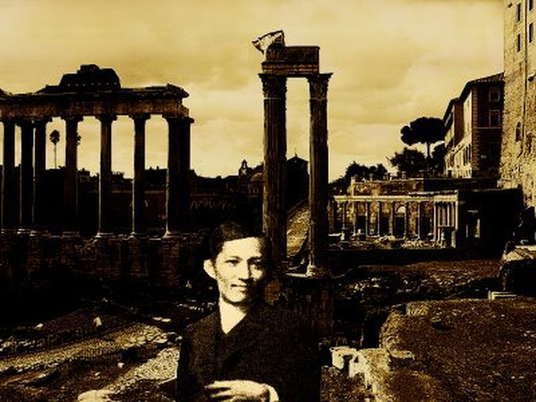

Gallery Archive

Iconic portrait of Dr. Jose Rizal.
Original manuscripts of his novels.
The Rizal Monument at Luneta Park.

Historical markers of his European travels.
The Young Prodigy
The First Journey
The Second Trip
Exile in Dapitan
The Martyrdom
Iconic portrait of Dr. Jose Rizal.
Original manuscripts of his novels.
The Rizal Monument at Luneta Park.
Historical markers of his European travels.